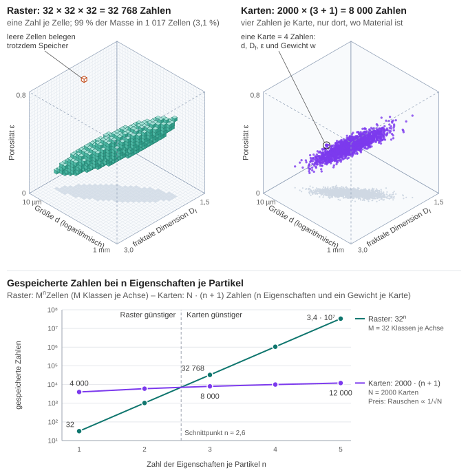
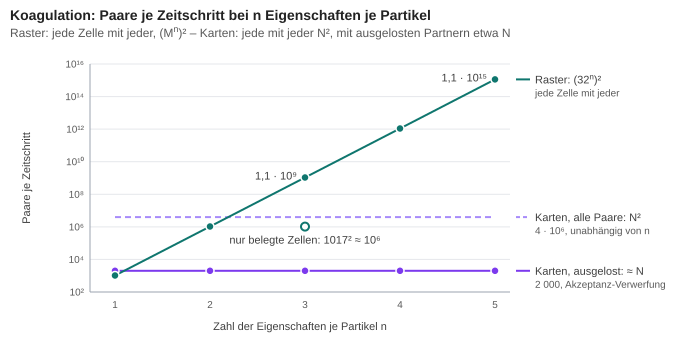
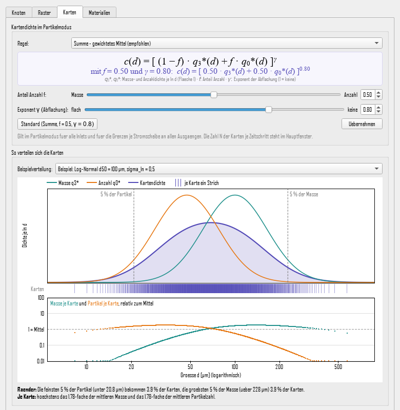
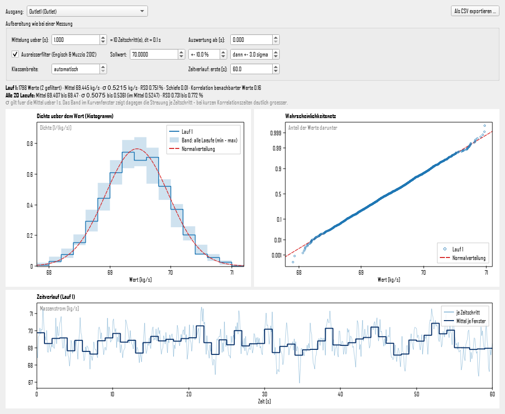

StoSiS – Methodenhandbuch
Modell, Annahmen und Verfahren
StoSiS ist eine dynamische Fließschemasimulation für die Feststoffverfahrenstechnik. Dieses Handbuch beschreibt, was das Programm rechnet und wie: die Annahmen des Modells, die Verfahren, ihre Grenzen und wie sie geprüft sind. Die meisten Kapitel folgen demselben Aufbau – Zweck, Annahmen, Verfahren, Grenzen, Prüfung.
1Überblick
Ein Flowsheet besteht aus Units, deren Ein- und Ausgänge über Ströme verbunden sind. Ein Strom trägt die Massenstromdichte über der Partikelgröße, getrennt nach Stoffen, dazu Temperatur und Druck. Gerechnet wird in Zeitschritten: In jedem Schritt verarbeitet jede Unit genau eine Zeitscheibe ihrer Eingänge.
Units können Zufallsprozesse enthalten, etwa einen schwankenden Teilungsanteil. Ein Ergebnis ist dann keine einzelne Kurve, sondern eine Statistik über viele Läufe mit verschiedenen Zufallszahlen.
Für die Partikel gibt es zwei Darstellungen, die für eine ganze Simulation gelten:
- Kontinuum: Der Strom ist eine Verteilung auf einem festen Größenraster.
- Partikelmodus: Der Strom ist eine Liste gewichteter Monte-Carlo-Partikel, hier Karten genannt. Jede Karte trägt eine Größe und eine Masse je Stoff (Kapitel 9).
Der Rechenkern ist reines C++ ohne Abhängigkeit von der Oberfläche; er läuft auch in automatischen Tests und im Batchbetrieb. Die Oberfläche (Qt) dient zum Aufbauen, Einstellen und Auswerten.
Umfang
Verfügbare Units: Inlet, Outlet, Merger, Splitter (fest oder schwankend) und eine größenabhängige Verzögerung. Im Partikelmodus rechnen Inlet, Outlet, Merger und Splitter; die Verzögerung nur im Kontinuum. Prozesse, die Partikel verändern – Koagulation, Bruch, Wachstum, Keimbildung –, sind nicht enthalten.
2Grundannahmen
- Ein Strom wird durch die Massenstromdichte je Stoff über der Partikelgröße beschrieben. Eine Partikelzahl wird nicht gespeichert; sie folgt bei Bedarf aus Masse, Größe und Dichte.
- Partikel sind Kugeln aus Feststoff ohne Poren; ihre Dichte ist die Feststoffdichte des Stoffs.
- Temperatur und Druck sind Eigenschaften jedes Stroms und wandern mit dem Material. Es gibt keine globale Umgebungstemperatur.
- Ein Inlet liefert genau einen Stoff. Mischungen entstehen, wenn Ströme in einem Merger zusammenlaufen.
- Units rechnen ohne Iteration, Schritt für Schritt. Der Zeitschritt muss kleiner sein als die kürzeste Verweil- oder Rücklaufzeit im Flowsheet.
- Zufall entsteht nur in Units mit einem Zufallsprozess. Ein Flowsheet ohne solche Units wird einmal gerechnet.
- Intern wird in SI-Einheiten gerechnet (m, kg, s, K, Pa); die Oberfläche zeigt Partikelgrößen in µm.
3Flowsheet und Zeitschritte
Zweck
Material soll in der Zeit durch das Flowsheet laufen, auch durch Rückführungen und durch Units mit Gedächtnis (Hold-up).
Annahmen
Jede Unit hat nummerierte Ein- und Ausgänge (Ports); an jedem Port hängt höchstens eine Verbindung. Aufteilen und Zusammenführen geschieht nur in Splittern und Mergern, sodass die Massenbilanz an jedem Knoten eindeutig ist. Alle Units teilen sich eine globale Uhr tk = k·Δt.
Verfahren
In jedem Zeitschritt (Makroschritt) rechnet jede Unit genau einmal: Sie erhält die Ströme an ihren Eingängen und liefert die Ströme an ihren Ausgängen. Was zwischen zwei Schritten in einer Unit steckt, ist ihr innerer Zustand.
Die Units rechnen der Reihe nach in Flussrichtung und lesen die Ausgänge ihrer Vorgänger aus demselben Schritt (wie beim Gauß-Seidel-Verfahren). Die Reihenfolge liefert eine topologische Sortierung nach Kahn. Material durchläuft so in einem Schritt beliebig lange Ketten ohne künstliche Verzögerung.
Ein Kreis hat keine erste Unit. Dort wird genau eine Verbindung aufgeschnitten: Ihr Ziel liest den Strom des vorherigen Schritts, die Verbindung wirkt wie ein kurzes Rohr mit der Totzeit Δt. Die Schnittstelle wird nach einer festen Regel gewählt, damit das Ergebnis nicht von der Reihenfolge abhängt, in der das Flowsheet gezeichnet wurde:
- bevorzugt am Eingang eines Mergers, denn jeder Kreis braucht eine Zusammenführung;
- dort am Eingang, der aus einem Trennapparat kommt – dort beginnt der Rückführstrom, und Frischgut bleibt unverzögert;
- sonst am Knoten mit den meisten bereits berechneten Eingängen.
Eine Verbindung kann auch von Hand als Rückführung markiert werden. Aufgeschnittene Verbindungen sind im Flowsheet orange gestrichelt.
Grenzen
Jeder Kreis erhält eine Totzeit von einem Zeitschritt. Der stationäre Zustand hängt davon nicht ab, der zeitliche Verlauf verschiebt sich um Δt. Alle Units rechnen mit demselben Zeitschritt; feinere Teilschritte innerhalb einer Unit gibt es nicht.
Prüfung
- Kreis aus Merger und Splitter 50/50 bei 10 kg/s Zulauf: Das Einschwingen folgt exakt Mk = 10 + ½ Mk−1, stationär 20 kg/s im Merger.
- Kreis mit 1 s Verzögerung und 30 % Rücklauf: Merger 14,2857 kg/s, Outlet 10 kg/s; die Massenbilanz einschließlich Hold-up geht exakt auf.
4Größenraster
Zweck
Im Kontinuum ist das Raster der Strom: Jeder Strom besteht aus Werten an den Stützstellen. Im Partikelmodus dient es nur zum Auszählen der Karten für Anzeige und Vergleich.
Verfahren
Standard ist ein geometrisches Raster, bei dem jede Stützstelle um einen festen Faktor r größer ist als die vorige:
di = dmin · ri, Standard 1 µm bis 1 mm mit 300 Stützstellen
Ein lineares Raster ist ebenfalls wählbar. Gespeichert wird an jeder Stützstelle die Massenstromdichte q(t, d) – eine Dichte, keine Menge je Klasse. So hängen Ergebnisse nicht von der Klassenbreite ab, und jedes Integral hat eine Bedeutung. Integriert wird auf dem geometrischen Raster mit der Trapezregel in ln d:
ṁ(t) = ∫ d · q(t, d) d(ln d) ≈ ln r · [ ½ d0q0 + d1q1 + … + ½ dnqn ]
Aus derselben Matrix folgen der Massenstrom über der Zeit, die Größenverteilung des Durchsatzes und die Gesamtmasse. Vor dem Rechnen prüft das Programm jedes Inlet gegen das Raster und meldet, wenn mehr als 0,1 % seiner Verteilung außerhalb liegen.
Grenzen
Im Kontinuum fehlt Material außerhalb von [dmin, dmax]. Die Auflösung ist durch die Zahl der Stützstellen begrenzt.
Prüfung
Der vom Raster erfasste Anteil trifft die exakte Verteilungssumme Q3(dmax) − Q3(dmin) für fünf Verteilungen auf 1,3 · 10−6. Die Massenbilanz über Verzögerung und Splitter geht auf 3 · 10−14 kg von 50 kg auf.
5Inlet und Größenverteilungen
Zweck
Das Inlet speist Material mit vorgegebenem Massenstrom und vorgegebener Größenverteilung in das Flowsheet ein.
Annahmen
Der Massenstrom ṁ(t) ist stückweise linear zwischen Stützpunkten und wird außerhalb konstant fortgesetzt. Die Form der Verteilung bleibt zeitlich gleich, nur ihre Höhe folgt dem Massenstrom: q(t, d) = ṁ(t) · q3(d).
Verfahren
Die Verteilung wird als Massendichte q3(d) bzw. Verteilungssumme Q3(d) angegeben – Q3(d) ist der Massenanteil aller Partikel kleiner als d.
| Verteilung | Parameter | Verteilungssumme bzw. Dichte |
|---|---|---|
| Log-Normal (Standard) | d50, σln | q3 = 1/(d σln √(2π)) · exp(−ln²(d/d50) / (2σln²)) |
| RRSB | d′, n | Q3 = 1 − exp(−(d/d′)n) |
| GGS | dmax, m | Q3 = (d/dmax)m für d ≤ dmax |
| Tabelle | Punkte (di, Q3,i) | Q3 linear in ln d zwischen den Punkten |
| Normal (nicht empfohlen) | d0, σ | Gaußsche Glockenkurve; erlaubt d < 0, daher mit Warnung |
Standard ist Log-Normal mit d50 = 100 µm und σln = 0,25: Partikelgrößen sind positiv und ihre Verteilungen meist schief. Die Tabelle nimmt gemessene Verteilungen auf, etwa aus einer Siebanalyse, ohne zwischen den Punkten eine Form dazuzuerfinden.
Im Kontinuum erhält jede Stützstelle genau die Masse, die ihr bei anteiliger Aufteilung nach der Lage zwischen den Nachbarn zusteht (Hutfunktion in ln d). Die Summe über alle Stützstellen ist damit exakt Q3(dmax) − Q3(dmin), auch wenn die Dichte springt wie bei GGS am Größtkorn. Im Partikelmodus erzeugt das Inlet Karten nach der Kartendichte (Kapitel 9.3).
Grenzen
Die Verteilung ist zeitlich konstant; eine sich ändernde Verteilung entsteht nur über mehrere Inlets und einen Merger. Die Hutfunktion glättet den Gipfel leicht – beim Standard-Inlet um höchstens 7 · 10−4 des Maximums.
Prüfung
Für alle Verteilungen gilt Q3(Quantil(p)) = p auf 10−8 relativ, und die eingespeiste Masse entspricht in jedem Zeitschritt dem Zulaufprofil.
6Stoffe, Temperatur und Druck
Zweck
Mehrere Stoffe sollen gemeinsam durch das Flowsheet laufen, und Stoffwerte wie Dichte, Wärmekapazität oder Viskosität sollen bei der jeweiligen Temperatur und dem jeweiligen Druck verfügbar sein.
Annahmen
Ein Strom trägt je Stoff eine separate Verteilung auf demselben Raster, dazu eine Temperatur und einen Druck. Einfache Units wie Splitter und Verzögerung reichen beide unverändert weiter.
Verfahren
Die Stoffwerte stehen in einer Materialdatei im JSON-Format (data/Materialien.json) mit 18 Stoffen. Jede Eigenschaft ist eine Konstante, eine Formel (ideales Gas, Sutherland, Antoine, Polynome) oder eine Tabelle über der Temperatur, jeweils mit Gültigkeitsbereich, Quelle und Prüfstatus. Gibt es mehrere Einträge, gilt zuerst einer mit Temperatur und Druck im Bereich, dann einer mit der Temperatur im Bereich, sonst der mit der nächstgelegenen Temperaturgrenze; Werte außerhalb des Bereichs oder jenseits der Messpunkte werden markiert. Die aktiven Stoffe eines Flowsheets ergeben sich aus den Inlets.
Gespeichert wird nur die Wärmekapazität cp(T); die Enthalpie folgt durch Integration, h(T) = ∫ cp dT ab 298,15 K. Laufen Ströme zusammen, gilt die Energiebilanz: Die Mischtemperatur ist die Temperatur, bei der die Enthalpie der Mischung gleich der Summe der zugeführten Enthalpien ist. Gelöst wird sie mit dem Newton-Verfahren, abgesichert durch Bisektion zwischen kältester und wärmster Eintrittstemperatur. Bei konstanter Wärmekapazität ergibt sich
TMisch = Σ ṁi cp,i Ti / Σ ṁi cp,i
Der Druck nach dem Mischen ist der kleinste Eingangsdruck eines Stroms mit Material. An einer Zusammenführung herrscht nur ein Druck, und Material strömt nur vom höheren zum niedrigeren Druck.
Grenzen
Die Werte stammen zunächst aus der Datenbank von Dyssol und sind bis zu ihrer Prüfung als ungeprüft gekennzeichnet; auffällige Einträge tragen eine Warnung. Fehlt einem Stoff die Wärmekapazität, wird die Temperatur nach der Masse gemittelt und ein Hinweis ausgegeben. Eine Gasphase als Trägermedium gibt es nicht.
Prüfung
- Sand bei 20 °C und 80 °C im Massenverhältnis 10 : 5 mischen sich zu 40,000 °C, Sand mit Harnstoff zu 48,92 °C – die geschlossene Lösung für konstante Wärmekapazität.
- Die Massenbilanz je Stoff über Merger und Splitter stimmt auf 10−15.
- Die Viskositäten von Stickstoff, Sauerstoff und Luft liegen bis 500 K innerhalb von 1 % der Referenzgleichungen von Lemmon & Jacobsen (2004).
7Units
7.1Merger
Der Merger addiert die Massenstromdichten seiner Eingänge je Stoff; Temperatur und Druck folgen aus Kapitel 6. Im Partikelmodus hängt er die Karten aller Eingänge aneinander.
7.2Splitter
Zweck
Der Splitter teilt einen Strom auf zwei oder drei Ausgänge auf, als reiner Mengenteiler: Der Anteil gilt für alle Partikelgrößen gleich.
Annahmen
Die Anteile sind fest oder schwanken zeitlich korreliert um einen Mittelwert. Der letzte Ausgang erhält jeweils den Rest.
Verfahren
Im schwankenden Modus folgt der Anteil gi jedes Ausgangs außer dem letzten einem Ornstein-Uhlenbeck-Prozess mit Mittelwert μ, Streuung σ und Korrelationszeit τ:
dg = −(g − μ)/τ · dt + σ √(2/τ) dW
Der Prozess ist stationär und normalverteilt, kehrt immer zum Mittelwert zurück und hat genau eine Korrelationszeit. Fortgeschrieben wird er exakt statt mit dem Euler-Verfahren, sodass Mittelwert, Streuung und Zeitverhalten nicht vom Zeitschritt abhängen:
gk+1 = μ + (gk − μ) a + σ √(1 − a²) ξ, a = e−Δt/τ, ξ ~ N(0, 1)
Der Prozess startet bereits im Gleichgewicht, g(0) ~ N(μ, σ²). Anteile außerhalb von [0, 1] werden abgeschnitten; übersteigt die Summe der schwankenden Anteile 1, werden sie anteilig gekürzt. Die Masse bleibt in jedem Schritt exakt erhalten. Der Zufallsprozess läuft auch ohne Zulauf weiter, sodass die Zufallsfolge nur vom Seed abhängt. Im Partikelmodus verteilt das Konto-Verfahren die Karten (Kapitel 9.4).
Grenzen
Bei großem σ verschiebt das Abschneiden den Mittelwert leicht; der Editor weist darauf hin, wenn μ ± 3σ außerhalb von [0, 1] liegt. Größenabhängiges Trennen, wie in einem Sieb, leistet der Splitter nicht.
Prüfung
| Fall | Erwartung | Ergebnis |
|---|---|---|
| μ = 0,3, σ = 0,05, τ = 2 s, Δt = 0,1 s | Mittel 0,3, Streuung 0,05, Autokorrelation nach 2 s e−1 = 0,368 | 0,301 / 0,049 / 0,353 |
| dasselbe mit Δt = 0,5 s | gleiche Statistik | 0,301 / 0,050 / 0,368 |
| τ = 0 | keine Autokorrelation | 0,005 |
| drei Ausgänge, σ = 0,03 und 0,06 | Rest-Streuung √(0,03² + 0,06²) = 0,067 | 0,066 |
7.3Größenabhängige Verzögerung
Die Verzögerung hält Material je Größe unterschiedlich lange zurück:
tdelay(d) = tref · (d / dref)p
Ihr Hold-up ist ein Ringpuffer der letzten Eingänge; zwischen den Zeitpunkten wird linear interpoliert. Jeder Platz im Puffer merkt sich Temperatur und Druck seines Materials, und gleichzeitig ankommendes Material wird wie im Merger gemischt. Die Unit ist ein Platzhalter für Transportmodelle auf Basis von Verweilzeitverteilungen und rechnet nur im Kontinuum.
7.4Outlet
Das Outlet nimmt den ankommenden Strom auf und zeichnet ihn auf.
8Zufallszahlen und mehrere Läufe
Zweck
Gleicher Seed soll auf jedem System dasselbe Ergebnis liefern, und Units sollen voneinander unabhängige Zufallszahlen erhalten. Aus vielen Läufen entsteht die Statistik eines Ergebnisses.
Verfahren
- Generator: Mersenne Twister mt19937_64; Gleichverteilung aus den oberen 53 Bit; Normalverteilung mit der Polarmethode nach Marsaglia. Die Normalverteilung der C++-Standardbibliothek wird nicht verwendet, weil ihr Verfahren je nach Bibliothek verschieden ist.
- Seed je Unit: SeedUnit = SplitMix64(Seed ⊕ SplitMix64(FNV-1a(Knoten-ID))). Die Zufallsfolge einer Unit hängt damit nur vom globalen Seed und ihrer Kennung ab, nicht von der Zeichenreihenfolge, und zwei Units schwanken nicht im Gleichtakt.
- Läufe: Lauf 1 nutzt den eingestellten Seed, weitere Läufe abgeleitete Seeds. Standard sind 20 Läufe.
- Statistik: Mittelwert und Varianz je Zelle werden mit dem Welford-Verfahren in einem Durchgang fortgeschrieben, numerisch stabil und mit Bessel-Korrektur. Volle Matrizen gibt es für Lauf 1, den Mittelwert und die Standardabweichung; für jeden Lauf werden zusätzlich Massenstrom über der Zeit, Größenverteilung und Gesamtmasse gespeichert.
- Darstellung: Mittelwert mit Band ±1σ, ±2σ oder dem 5–95-%-Perzentil (lineare Interpolation, Typ 7 nach Hyndman & Fan), auf Wunsch mit den Einzelläufen. Die Randverteilungen der Streuungs-Heatmap werden aus den Einzelläufen berechnet, nicht durch Integration der Streuungsmatrix, weil die Größenklassen miteinander korreliert sind.
Grenzen
Die Unsicherheit eines Mittelwerts sinkt mit 1/√N: Hundertmal mehr Läufe machen ihn nur zehnmal genauer. Perzentile sind erst ab etwa 20 Läufen aussagekräftig.
Prüfung
Für einen Splitter hinter einem konstanten Zulauf ṁ lässt sich die Streuung der Masse M, die in der Zeit T einen Ausgang erreicht, geschlossen angeben:
E[M] = μ ṁ T, Var[M] = 2 ṁ² σ² τ ( T − τ (1 − e−T/τ) )
Mit ṁ = 10 kg/s, μ = 0,3, σ = 0,05, τ = 2 s und T = 40 s erwartet man 120,000 kg ± 6,164 kg; 2000 Läufe ergeben 120,058 kg ± 6,094 kg. Die Abweichung der Streuung von −1,1 % liegt innerhalb der statistischen Unsicherheit von 1,6 %. Der Fehler fällt mit der Zahl der Läufe wie 1/√N.
9Partikelmodus: Karten
9.1Karten sind Monte-Carlo-Partikel
Im Partikelmodus besteht ein Strom aus Karten. Eine Karte ist ein gewichtetes Monte-Carlo-Partikel, in der Literatur auch gewichtetes Simulationspartikel genannt (Zhao, Kruis & Zheng 2009; Kotalczyk & Kruis 2017): ein Rechenpartikel, das eine Gruppe gleicher echter Partikel vertritt. „Karte“ und „Monte-Carlo-Partikel“ bezeichnen in diesem Handbuch dasselbe.
Eine Karte trägt eine Größe d und einen Massenstrom ṁk je Stoff k. Ihr Gewicht w – die Zahl der echten Partikel, die sie in einem Zeitschritt Δt vertritt – folgt daraus für kompakte Kugeln:
w = Δt · Σk (ṁk / ρk) / (π d³ / 6)
Das Prinzip ist das einer Umfrage, in der wenige Befragte mit ihren Merkmalen für viele Menschen stehen: Einige tausend Karten je Zeitschritt beschreiben einen Strom aus Milliarden Partikeln. Wo viel Material ist, liegen viele Karten; Größenbereiche ohne Material kosten nichts.
Partikel statt Raster lohnen sich, wenn ein Partikel mehrere Eigenschaften trägt, etwa Größe, Porosität und fraktale Dimension. Im Kontinuum braucht jede Eigenschaft eine Achse des Rasters, und jede Zelle speichert eine Zahl, ob dort Material liegt oder nicht. Eine Karte speichert nur ihre Eigenschaften und ihr Gewicht. Mit M Klassen je Achse, n Eigenschaften und N Karten ergibt sich:
Raster: Mn Zahlen Karten: N · (n + 1) Zahlen
Das Raster wächst exponentiell mit der Zahl der Eigenschaften, die Karten wachsen linear (Abbildung 9.1). Bei 32 Klassen je Achse und drei Eigenschaften hat das Raster 32³ = 32 768 Zellen; in der Beispielverteilung liegen 99 % der Masse in 1017 davon (3,1 %), alle übrigen sind leer oder fast leer und belegen trotzdem Speicher. 2000 Karten brauchen 2000 · 4 = 8000 Zahlen, liegen nur dort, wo Material ist, und tragen exakte Werte statt Klassen. Bei fünf Eigenschaften stehen 3,4 · 107 Zellen gegen 12 000 Zahlen; mit 100 Klassen je Achse hätte das Raster schon bei drei Eigenschaften 106 Zellen.
Für eine einzige Eigenschaft ist das Raster dagegen kleiner (32 gegen 4000 Zahlen) und rauschfrei; die Grenze liegt in diesem Beispiel bei n ≈ 2,6. Das passt zur Schätzung von Shima et al. (2009) für Wolkentropfen, nach der Rechenpartikel ab etwa zwei bis vier Eigenschaften weniger Rechenzeit brauchen als ein Raster. Der Preis der Karten ist ein statistisches Rauschen, wo Karten zufällig gezogen oder verteilt werden; es fällt mit 1/√N.

Für Prozesse wie die Koagulation, bei denen Paare von Partikeln zählen, wächst der Unterschied noch weiter (Abbildung 9.2). Ein Raster koppelt jede Zelle mit jeder, also (Mn)² Zellpaare je Zeitschritt; bei 32 Klassen und drei Eigenschaften sind das 1,1 · 109. Ein Monte-Carlo-Verfahren durchsucht dagegen nicht alle Paare: Es lost Partner aus und nimmt ein Paar mit einer Wahrscheinlichkeit proportional zum Koagulationskern an (Akzeptanz-Verwerfung; Kruis, Maisels & Fissan 2000). Bei einem zeitgesteuerten Verfahren ist das etwa ein Versuch je Karte und Zeitschritt, also größenordnungsmäßig N Paare, unabhängig von der Zahl der Eigenschaften; selbst alle N² Kartenpaare blieben bei 4 · 106. Würde das Raster nur die belegten Zellen paaren, wären es bei drei Eigenschaften immer noch 1017² ≈ 106 Paare, rund das 500-Fache der ausgelosten Kartenpaare.

Die Bausteine gewichteter Monte-Carlo-Verfahren finden sich im Partikelmodus wieder:
| Gewichtetes Monte-Carlo-Verfahren | Partikelmodus |
|---|---|
| Simulationspartikel | Karte |
| Eigenschaften: Größe, Zusammensetzung | Größe d, Massenstrom ṁk je Stoff |
| Gewicht: Zahl der vertretenen echten Partikel | Gewicht w |
| Zahl der Simulationspartikel | Karten je Zeitschritt und Inlet, N |
| Verteilung der Simulationspartikel über der Größe, etwa über Gewichtsfunktionen (DeVille, Riemer & West 2011) | Kartendichte (Kapitel 9.3) |
| Teilen und Zusammenlegen von Simulationspartikeln (Zhao, Kruis & Zheng 2009; Kotalczyk & Kruis 2017) | Grenzen je Stromscheibe (Kapitel 9.5) |
| Ereignisse zwischen Simulationspartikeln, etwa Koagulation | nicht enthalten (Kapitel 1); Größe, Zusammensetzung und Gewicht liegen auf jeder Karte vor |
„Monte Carlo“ beschreibt das Verfahren: Zufallszahlen entscheiden, was mit den Partikeln geschieht. Im Partikelmodus sind das der schwankende Teilungsanteil eines Splitters und die zufällige Startposition seines Konto-Verfahrens (Kapitel 9.4); viele Läufe ergeben die Statistik (Kapitel 8). Am Inlet entstehen die Karten dagegen ohne Zufall, eine in der Mitte jedes Streifens gleicher Fläche unter der Kartendichte (Kapitel 9.3), und sind damit rauschfrei. In einer Dimension ist das die Punktmenge mit der kleinsten Diskrepanz, wie sie Quasi-Monte-Carlo-Verfahren nutzen; für die Koagulationsgleichung ordnen Lécot & Wagner (2004) die Partikel ebenfalls nach der Masse und verwenden Folgen geringer Diskrepanz statt Zufallszahlen.
Die Darstellung gilt für die ganze Simulation, vom Inlet bis zum Outlet. Eine Simulation im Partikelmodus startet nur, wenn alle Units des Flowsheets Karten verarbeiten können. Die Zahl der Karten je Zeitschritt und Inlet, N, ist einstellbar (Standard 2000); sie bestimmt, wie genau ein Lauf die Verteilung wiedergibt.
9.2Der Begriff „Karte“
Der Name stammt vom Bild eines Karteikastens. Das Kontinuum gleicht einem Setzkasten mit einem festen Fach je Größe und Stoff, in dem nur steht, wie viel Masse darin liegt. Im Partikelmodus tritt an seine Stelle ein Karteikasten: eine Karte je Rechenpartikel, auf der Größe, Masse je Stoff und Gewicht stehen. Eine weitere Eigenschaft ist eine weitere Zeile, und Karten gibt es nur für das, was tatsächlich vorkommt.
Für einen separaten Namen neben „Monte-Carlo-Partikel“ sprechen drei Gründe:
- Eindeutig neben „Partikel“. In der Feststoffverfahrenstechnik ist ein Partikel das echte Korn. Eine Karte vertritt viele davon, und zwei Wörter halten beides auseinander: „eine Karte vertritt eine Million Partikel“ statt „ein Partikel vertritt eine Million Partikel“. Dasselbe gilt für zusammengesetzte Wörter: Kartendichte, Kartenzahl und Masse je Karte sind eindeutig, während Partikeldichte (Masse je Volumen eines Partikels), Partikelzahl und Partikelmasse bereits die echten Partikel bezeichnen.
- Name der Darstellung, nicht des Verfahrens. Eine Karte bleibt eine Karte, ob sie zufällig oder nach einer festen Regel behandelt wird – am Inlet ohne Zufall, im Splitter nach dem Konto-Verfahren mit zufälligem Start. „Monte-Carlo-Partikel“ benennt dasselbe Objekt aus der Sicht des Verfahrens, „Karte“ aus der Sicht der Daten.
- Ein Objekt, mehrere Namen. Auch in der Literatur heißt das gewichtete Rechenpartikel je nach Fachgebiet anders: weighted simulation particle bei der Koagulation (Zhao, Kruis & Zheng 2009), parcel bei Sprays (Dukowicz 1980), super-droplet in der Wolkenphysik, wo das Gewicht multiplicity heißt (Shima et al. 2009). „Karte“ ist ein kurzer deutscher Name dafür, der sich gut zusammensetzen lässt: Kartendichte, Kartenansicht, Karten je Zeitschritt.
9.3Kartendichte und Karten am Inlet
Zweck
Die Karten sollen über der Größe so verteilt sein, dass sowohl massenbezogene Ergebnisse (Massenstrom, d50) als auch anzahlbezogene (Feingut, Partikelzahl) eine brauchbare Statistik haben.
Verfahren
Die Kartendichte c über ln d ist ein Mittel aus der Massendichte q3* und der Anzahldichte q0* (beide je ln d, Fläche 1), abgeflacht mit dem Exponenten γ:
c(d) ∝ M(q3*, q0*)γ
| Regel | Mittel M | Eigenschaft |
|---|---|---|
| Summe (Standard) | (1 − f) q3* + f q0* | ohne Abflachung trägt keine Karte mehr als 1/(1 − f)-mal die mittlere Masse und 1/f-mal die mittlere Partikelzahl |
| Quadratisch | ((1 − f) q3*² + f q0*²)1/2 | folgt stärker dem jeweils Größeren; Schranken 1 + √(f/(1 − f)) und 1 + √((1 − f)/f) |
| Produkt | q3*1 − f · q0*f | ein Buckel zwischen Masse und Anzahl, dünne Ränder, keine Schranke |
Der Anteil f gewichtet die Anzahl (0 = nur Masse, 1 = nur Anzahl); γ = 1 bedeutet keine Abflachung, kleinere Werte geben beiden Rändern mehr Karten. Standard ist die Summe mit f = 0,5 und γ = 0,8. Alle drei Mittel sind homogen vom Grad 1, sodass Teilen und Zusammenlegen von Karten konsistent bleiben.
Am Inlet wird die Fläche unter der Kartendichte in N gleiche Streifen geteilt. In jeden Streifen kommt eine Karte, platziert in seiner Mitte; ihre Masse ist die Masse des Streifens, exakt aus Q3. Größen und Massenanteile stehen damit einmal fest, jeder Zeitschritt skaliert sie mit dem aktuellen Massenstrom – ohne Zufall, in jedem Schritt gleich.
Partikel unter der kleinsten Stützstelle des Rasters, dmin, zählen für die Kartendichte so, als hätten sie die Größe dmin. Das Raster löst darunter nicht auf, und bei Verteilungen, deren Partikelzahl zu kleinen Größen ohne Grenze wächst (etwa RRSB mit n < 3), bliebe die Anzahl sonst unbegrenzt.

Grenzen
Das Rauschen einer Größenregion sinkt mit der Wurzel der Karten, die dort liegen. Als Kennzahl dienen die beiden Ränder: die feinsten 5 % der Partikel und die gröbsten 5 % der Masse. Bekommt ein Rand weniger als 10 Karten je Zeitschritt, meldet das Inlet das zusammen mit Abhilfen, die bei den aktuellen Einstellungen noch möglich sind. Bei Verteilungen mit vielen sehr feinen Partikeln liegt ein Teil der Karten unter dmin.
Prüfung
Die Platzierung stimmt mit einer unabhängigen Rechnung überein; bei der Summe ohne Abflachung bleiben Masse und Partikelzahl je Karte unter den Schranken. Am Inlet trägt jede Karte im Inneren auf 0,1 % genau den Anteil 1/N an der Kartendichte.
9.4Splitter: Konto-Verfahren
Der Splitter verteilt ganze Karten, ohne sie zu kopieren. Die Karten eines Schritts werden nach Stoff und darin nach Größe geordnet und ab einer zufälligen Startposition einmal ringsum durchgegangen. Jede Karte zahlt fi · s auf das Konto jedes Ausgangs i ein und geht ganz in den Ausgang mit dem höchsten Kontostand, dessen Konto um s belastet wird. Dabei ist s der Anteil der Karte an der Kartendichte der Stromscheibe, berechnet mit derselben Regel wie am Inlet; die Anteile einer Scheibe ergeben zusammen 1. Die Konten laufen über die Schritte weiter, ihre Summe bleibt null.
So geht von benachbarten Karten jede (1/f)-te in einen Ausgang mit dem Anteil f – für leichte Karten genauso wie für schwere, nach Anzahl wie nach Masse. Die Ordnung nach Stoff sorgt dafür, dass jeder Stoff für sich im richtigen Verhältnis geteilt wird. Die Startposition stammt aus einem separaten Zufallsstrom; der Verlauf des schwankenden Anteils ist deshalb bei gleichem Seed im Kontinuum und im Partikelmodus derselbe.
Die Masse je Ausgang weicht je Schritt um etwa eine Karte vom Soll ab; über viele Schritte gleichen sich diese Abweichungen nicht exakt aus, bleiben aber in der Größenordnung von 10−5 des Durchsatzes. Nachskaliert wird nicht: Ein Faktor je Ausgang wäre ein Verhältnis aus Zufallsgrößen und verzerrt Ausgänge mit wenigen Karten.
9.5Grenzen je Stromscheibe
Hinter Mergern, Splittern und Rückführungen ändert sich die Kartenzahl: Ein Kreis mit dem Rücklaufanteil R vervielfacht sie um 1/(1 − R), ein kleiner Splitteranteil verdünnt sie. Deshalb gelten an jedem Ausgang einer Unit zwei Grenzen, gemessen am Anteil jeder Karte an der Kartendichte:
- Höchstens 2N Karten je Stromscheibe. Sind es mehr, werden benachbarte Karten desselben Stoffs paarweise zusammengelegt, die leichtesten Paare zuerst; ein Paar darf zusammen höchstens 5/N tragen. Masse und Partikelzahl bleiben erhalten, die neue Größe folgt aus d³ = (m1 + m2) / (m1/d1³ + m2/d2³).
- Keine Karte über 5/N. Eine schwerere Karte wird in gleiche Stücke gleicher Größe geteilt; die Verteilung ändert sich dadurch nicht.
Inlets sind ausgenommen, ihre Karten folgen bereits der Kartendichte.
Prüfung: 20 000 Karten aus zehn Scheiben werden zu 4000 zusammengelegt, d10, d50 und d90 verschieben sich um höchstens 0,014 %; eine Rückführung mit R = 0,9 hält höchstens 4000 Karten im Kreis; das Teilen ändert das Ergebnis auf dem Raster um 5,5 · 10−16.
9.6Umrechnung auf das Raster
Für Kurven, Heatmap und Auswertung werden die Karten auf das Größenraster umgerechnet: Jede Karte gibt ihre Masse anteilig an die beiden benachbarten Stützstellen ab, linear nach ihrer Lage in ln d (cloud-in-cell). Masse und mittleres ln d bleiben dabei exakt erhalten. Eine Kartenansicht zeigt außerdem die Verteilungen direkt aus den Karten – Dichte, Summenkurve, Karten je Klasse und den Verlauf über der Zeit – neben dem Mittel aller Läufe.
9.7Prüfung des Partikelmodus
- Inlet → Outlet: Der Massenstrom am Outlet entspricht in jedem Schritt dem Zulaufprofil (relativ 10−12), die Verteilungssumme weicht um weniger als 0,2 % des Massenstroms vom Kontinuum ab.
- Zwei Inlets → Merger → schwankender Splitter: Bei gleichem Seed liegen die Outlet-Massenströme je Schritt höchstens etwa eine Karte neben dem Kontinuum; jeder Stoff kommt vollständig an.
- Sehr ungleich schwere Karten (Splitter 70/30): Die feinsten 5 % der Partikel gehen zu 69,97 % der Karten und 69,92 % der Masse in den 70-%-Ausgang, und kein Ausgang bleibt in einem Schritt ohne feine Karte.
- Dosierwaage (Kapitel 11): Mittelwert und Streuung im Partikelmodus wie im Kontinuum.
10Auswertung
Kurven zeigen Massenstrom, Temperatur und Druck über der Zeit oder die Verteilung über der Größe, jeweils mit Streuband über die Läufe. Die Heatmap zeigt die Massenstromdichte über Zeit und Größe mit beiden Randverteilungen; umschaltbar sind Lauf 1, Mittelwert und Standardabweichung.
Das Fenster „Auswertung“ bereitet den Massenstrom eines Ausgangs so auf, wie man eine Messung auswertet (nach Engisch & Muzzio 2012):
- Mittel über Zeitfenster, etwa 1 s wie bei einer Waage; die Einschwingzeit lässt sich ausschließen.
- Ausreißerfilter: erst Sollwert ± x %, dann wiederholt ± kσ, bis sich nichts mehr ändert.
- Kennzahlen: Mittelwert, Standardabweichung, relative Standardabweichung, Schiefe und die Korrelation benachbarter Werte.
- Dichte-Histogramm mit Band über alle Läufe, Wahrscheinlichkeitsnetz und Zeitverlauf; Export als CSV.
Angeboten werden nur Ströme, die von einer Unit mit Zufall abhängen. Bei einem deterministischen Strom würde der zeitliche Verlauf sonst als scheinbare Streuung erscheinen. Ein Laufzeitprotokoll hält fest, welche Unit wann wie lange gerechnet hat.

11Prüfung und Validierung
Geprüft wird auf drei Ebenen.
- Verifikation: Rechnet das Programm, was das Modell sagt? Dazu dienen analytische Lösungen, Bilanzen und das Konvergenzverhalten mit 1/√N.
- Vergleich mit anderen Programmen wie Dyssol oder PharmaPy: gleiche Modelle, gleiche Ergebnisse?
- Validierung: Trifft das Modell die Wirklichkeit? Das zeigt nur ein Experiment.
Die Prüfungen der Verifikation liegen als 13 Testprogramme im Repository und laufen mit einem Befehl (CTest). Stochastische Tests laufen mit festem Seed; ihre Toleranzen folgen aus dem statistischen Fehler und sind nicht frei gewählt. Ein Regressionstest überwacht Kennzahlen fester Flowsheets.
Validierung: Dosierwaage
Engisch & Muzzio (2012) messen den Massenstrom einer Dosierwaage für Laktose mit einer Auffangwaage, die alle 0,1 s abliest. Simuliert wird ein Inlet mit 100 kg/h, gefolgt von einem schwankenden Splitter (μ = 0,6944, τ = 0,3 s), über 30 min mit Δt = 0,1 s. Beide Datenreihen werden gleich ausgewertet: 1-s-Mittel, Filter ±10 % um den Sollwert, dann iterativ ±3σ.
| Mittel | Standardabweichung | relative Std. | |
|---|---|---|---|
| Messung | 69,45 kg/h | 0,539 kg/h | 0,78 % |
| StoSiS | 69,42 kg/h | 0,534 kg/h | 0,77 % |
Beide Verteilungen sind normalverteilt und statistisch nicht zu unterscheiden; 28 von 32 Balken des gemessenen Histogramms liegen im Band aus 20 Läufen. Validiert ist damit die Form der Schwankung, nicht ihre Vorhersage: Mittelwert und Streuung des Splitters sind an die Messung angepasst. Periodische Anteile im Messsignal, etwa von Rührern und Schnecken, bildet der Ornstein-Uhlenbeck-Prozess nicht ab.
Grenzen
Ein Vergleich mit anderen Programmen an gemeinsamen Flowsheets liegt nicht vor. Gegen Experimente geprüft ist nur der schwankende Splitter.
12Begriffe
- Flowsheet, Unit, Port
- Das Fließschema aus Prozesseinheiten (Units), verbunden über nummerierte Ein- und Ausgänge (Ports).
- Makroschritt, Zeitscheibe, Stromscheibe
- Ein globaler Zeitschritt Δt; der Strom an einer Verbindung während dieses Schritts.
- Hold-up
- Material, das zwischen zwei Schritten in einer Unit verbleibt.
- Aufgeschnittene Verbindung
- Die Verbindung in einem Kreis, deren Ziel den Strom des vorherigen Schritts liest.
- Lauf, Seed
- Eine vollständige Simulation mit einer Folge von Zufallszahlen; der Startwert dieser Folge.
- Stützstelle
- Größe, an der im Kontinuum die Massenstromdichte gespeichert wird.
- Q3, q3, q3*, q0*
- Verteilungssumme der Masse, ihre Dichte über d, die Massendichte und die Anzahldichte je ln d (Fläche 1).
- Karte
- Gewichtetes Monte-Carlo-Partikel (Simulationspartikel) des Partikelmodus mit Größe und Massenstrom je Stoff; der Name stammt vom Bild eines Karteikastens (Kapitel 9.1, 9.2).
- Gewicht einer Karte
- Zahl der echten Partikel, die eine Karte in einem Zeitschritt vertritt.
- Kartendichte, Anteil einer Karte
- Die Dichte, nach der Karten über der Größe verteilt werden; der Anteil einer Karte daran innerhalb ihrer Stromscheibe.
13Literatur
DeVille, R. E. L.; Riemer, N.; West, M. (2011): Weighted Flow Algorithms (WFA) for stochastic particle coagulation. Journal of Computational Physics 230(23), 8427–8451.
Dukowicz, J. K. (1980): A particle-fluid numerical model for liquid sprays. Journal of Computational Physics 35(2), 229–253.
Engisch, W. E.; Muzzio, F. J. (2012): Method for characterization of loss-in-weight feeder equipment. Powder Technology 228, 395–403.
Gillespie, D. T. (1996): Exact numerical simulation of the Ornstein-Uhlenbeck process and its integral. Physical Review E 54, 2084–2091.
Hesterberg, T. (1995): Weighted average importance sampling and defensive mixture distributions. Technometrics 37(2), 185–194.
Hyndman, R. J.; Fan, Y. (1996): Sample quantiles in statistical packages. The American Statistician 50, 361–365.
Kahn, A. B. (1962): Topological sorting of large networks. Communications of the ACM 5, 558–562.
Kotalczyk, G.; Kruis, F. E. (2017): A Monte Carlo method for the simulation of coagulation and nucleation based on weighted particles and the concepts of stochastic resolution and merging. Journal of Computational Physics 340, 276–296.
Kruis, F. E.; Maisels, A.; Fissan, H. (2000): Direct simulation Monte Carlo method for particle coagulation and aggregation. AIChE Journal 46, 1735–1742.
Lécot, C.; Wagner, W. (2004): A quasi-Monte Carlo scheme for Smoluchowski's coagulation equation. Mathematics of Computation 73, 1953–1966.
Lemmon, E. W.; Jacobsen, R. T (2004): Viscosity and thermal conductivity equations for nitrogen, oxygen, argon, and air. International Journal of Thermophysics 25, 21–69.
Marsaglia, G.; Bray, T. A. (1964): A convenient method for generating normal variables. SIAM Review 6, 260–264.
Matsumoto, M.; Nishimura, T. (1998): Mersenne Twister: a 623-dimensionally equidistributed uniform pseudo-random number generator. ACM Transactions on Modeling and Computer Simulation 8, 3–30.
Shima, S.; Kusano, K.; Kawano, A.; Sugiyama, T.; Kawahara, S. (2009): The super-droplet method for the numerical simulation of clouds and precipitation: a particle-based and probabilistic microphysics model coupled with a non-hydrostatic model. Quarterly Journal of the Royal Meteorological Society 135, 1307–1320.
Skorych, V.; Dosta, M.; Heinrich, S. (2020): Dyssol – an open-source flowsheet simulation framework for particulate materials. SoftwareX 12, 100572.
Steele, G. L.; Lea, D.; Flood, C. H. (2014): Fast splittable pseudorandom number generators. Proceedings OOPSLA 2014.
Uhlenbeck, G. E.; Ornstein, L. S. (1930): On the theory of the Brownian motion. Physical Review 36, 823–841.
Welford, B. P. (1962): Note on a method for calculating corrected sums of squares and products. Technometrics 4, 419–420.
Zhao, H.; Kruis, F. E.; Zheng, C. (2009): Reducing statistical noise and extending the size spectrum by applying weighted simulation particles in Monte Carlo simulation of coagulation. Aerosol Science and Technology 43, 781–793.